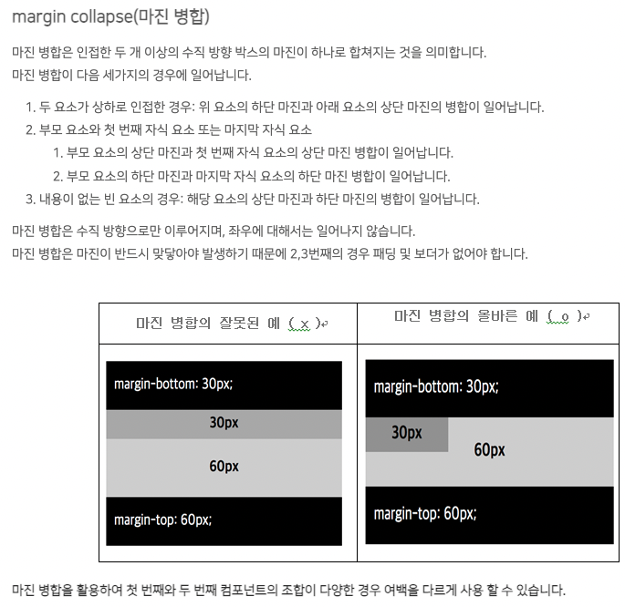
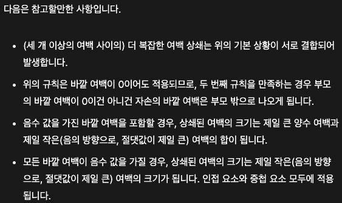

예시1
margin collapse가 일어나지 않았습니다.
margin collapse는 반드시 수직방향으로만 이루어지며,
좌우에 대해서는 이루어지지 않습니다.
예시2
margin collapse가 발생했습니다.
margin collapse는 수직방향의 박스 margin이 인접했을때
그 margin이 병합되는 현상을 말합니다.
예시2는 가장 전형적인 margin collapse의 하나입니다.
예시2의 red-box의 margin-bottom 40px과 blue-box의 margin-top 20px이
병합되어 두 box의 공간은 40px입니다.
예시3
margin collapse가 발생하지 않았습니다.
부모자식간에 margin collapse가 발생하는 경우는
-
부모요소의 상단 margin과 첫번째 자식요소의 상단 margin이 인접한경우,
-
부모요소의 하단margin과 마지막 자식요소의 하단 margin이 인접한
경우입니다.
그렇지만 반드시 margin끼리 맞닿아야 하기 때문에 부모자식간에 padding 및
border가 없어야 합니다.
예시3의 경우 부모요소와 자식요소가 맞닿았지만
부모요소에 padding이 정의되어 있으므로 margin collapse가 발생하지
않았습니다.
예시4
margin collapse가 발생했습니다.
예시4의 경우 부모자식간에 발생하는 margin collapse입니다. margin
collapse가 일어나지 않았다면,
부모요소의 margin-top 40px와
자식요소의 margin-top 40px 때문에
자식요소인 blue-box가 container-box의 border-top으로부터 80px가 떨어져야
하지만
margin collapse가 발생해서 두 margin이 병합되었 기에
부모인
red-box와 자식인 blue-box의 상단 경계가
일치되어 버렸습니다.
만약 이 현상을 해결하고자 한다면 부모요소에 padding-top을 정의하면 해결될
것입니다.
예시5
margin collapse가 발생했습니다.
예시5도 예시4와 마찬가지로 인접한 부모자식요소간의 margin collapse가
발생했습니다.
부모요소에는 margin-top이 정의되어 있지 않지만,
정의되지 않은 부모요소의 margin-top과
40px로 정의된 자식요소의
margin-top이 병합되어
마진병합은 상하위의 박스들의 마진값들 가운데 큰 쪽으로 병합을 뜻하므로,
40px의 margin이 발생하였습니다.
[참조] MDN 스크린샷의 경우 클릭하면 해당 페이지로 이동합니다.

